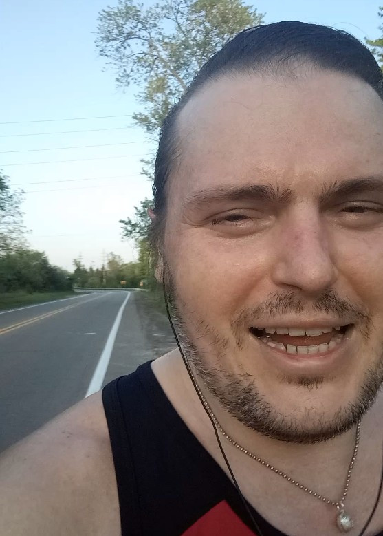

Caturday Run
Waiting for the sun to inch down,
before I go out in the town.
My legs have become like two huge potatoes,
but that's life, that's how it goes.
There are so many lovely people that notice me out there,
yesterday a cute couple, lady with fancy hair.
A couple of days ago, a gent from the gym,
slowly walking and wondering "Is that him?"
Oh yeah, that was me! I shaved my mustache,
and taught my self to dash.
Sure I run at the speed of a sickly gastropod,
but after my gym-dancing, don't even feel odd.
And before that, the ladies in the Jeep,
I didn't wave back, I am sorry, I was in the middle of a huge leap.
And then the first person to notice me in my sluggish swim,
might have been the Trainer! from the gym.
I was really tired in the middle of my early run,
muttering "I can't believe I have to run the same distance, before I am done."
And then I heard "Hi! Andre!" and I instantly regained my strength,
I could have run five times that length.
Sure, I am still learning, running tests and trails,
but my aim is one hour, to do the whole five miles.
And you know what, just after two weeks,
I run a lot faster; and I have rosy cheeks!
